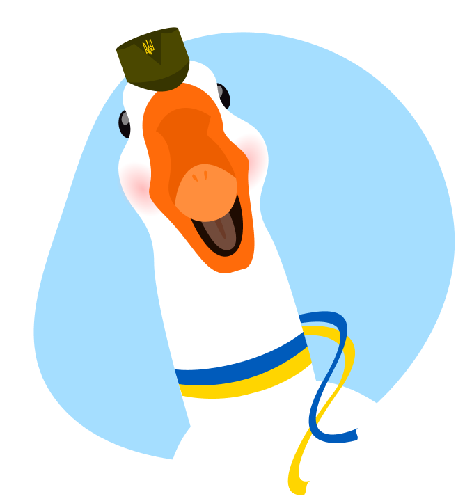

Доброго вечора, ми з України
На старт. Увага. Полетіли!
Бандерогусь
Спеціальний бойовий гусак із біолабораторій України. Пишаюся своїми подвигами, бороню Батьківщину та підтримую позитивний дух народу. Слава Україні!

Цікаві факти про бандерогусей
Зазвичай бандерогуси — виключно мирні птахи. Але у разі небезпеки можуть атакувати ворога системою надпотужного озброєння. Також нищать психологічно, активуючи високочастотне шипіння та розмахування крилами